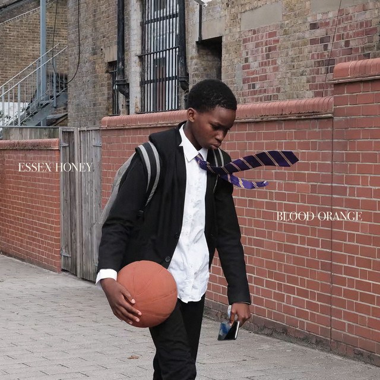

Music is my most important and prominent feature. I am consumed by the endless facets music can entail. Here's what I have been into lately:
Artist/Band of the Week
I came across Idaho recently and I have yet to find a song I did not enjoy. A very mellow listen that could almost serve as background music, but you ought to listen with intention to pick up on the quality of this band. Here is my favorite song off their very developed un-EP like EP:
Album of the Week
You already know. Blood Orange has released a new album as of last week. Devonte Hynes is a musical genius who continues to push boundaries and utilizes an array of instruments that fit so well you don't think twice about it. I love when he inserts a saxophone. I especially love this release because he features equally talented artist, which I feel I haven't seen with his previous music. This song stuck out to me most and you can't really go wrong with an addition of Tirzah:
Song of the Week
As mentioned previously, I am enjoying Starflyer 59's music. They encapsulate indie shoegaze pretty well while being easily digestable to an unfamiliar ear. Let me share with you my favorite song of theirs. Alhtough it exceeds the seven minute "I have lost my attention now" threshold, it is in fact seven minutes of pure joy. This contains one of the best continuous guitar riffs without being too intricate, but just enough to keep you on the edge of your seat. It feels like a soft yearnful pull to my ears. Go for the listen:
At the moment, I am also into Lily Chou Chou, Ben Kwellar's "Cover the Mirrors", Americana, French electronica soundtracks (The Virgin Suicides and Fantastic Planet), The Hollies, Robert Lester Folsom, and Dean Blunt and affiliates.
Press my sweet hover button to check out more.